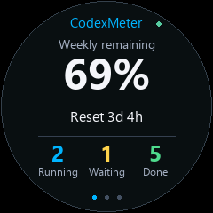
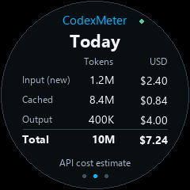
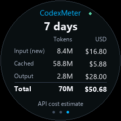

Three peer pages, each rendered at the display's native 240 × 240 pixels. Swipe between them; the selected page stays until you navigate. Browser zoom and monitor scaling affect physical size—this is not a calibrated 1.28-inch print.



Illustrative values—not live usage or device screenshots. Green dot: connected. Bottom dots: selected page. Costs are illustrative API-equivalent USD estimates, not subscription charges. Segoe UI is a prototype font; final firmware fonts require physical readability checks. Power telemetry is omitted pending hardware verification.